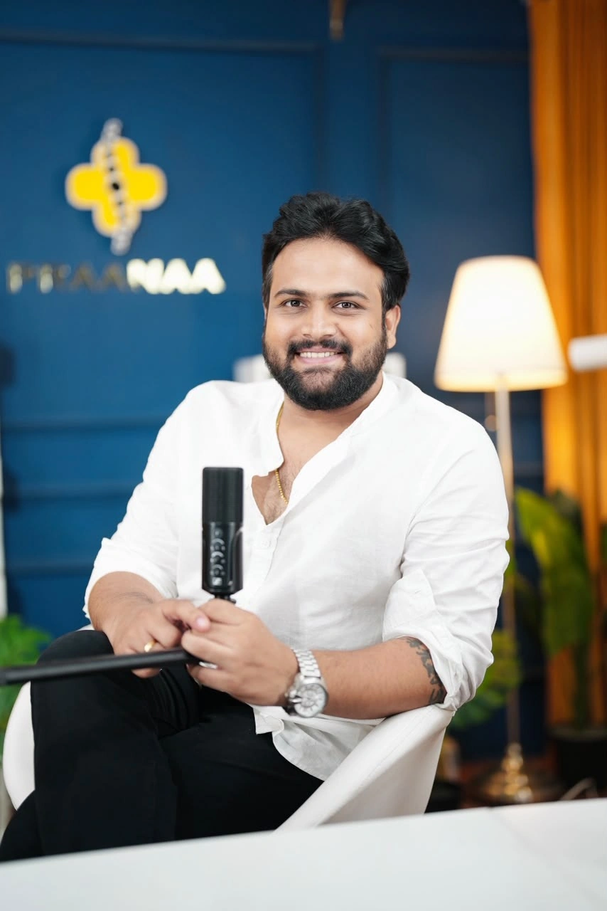
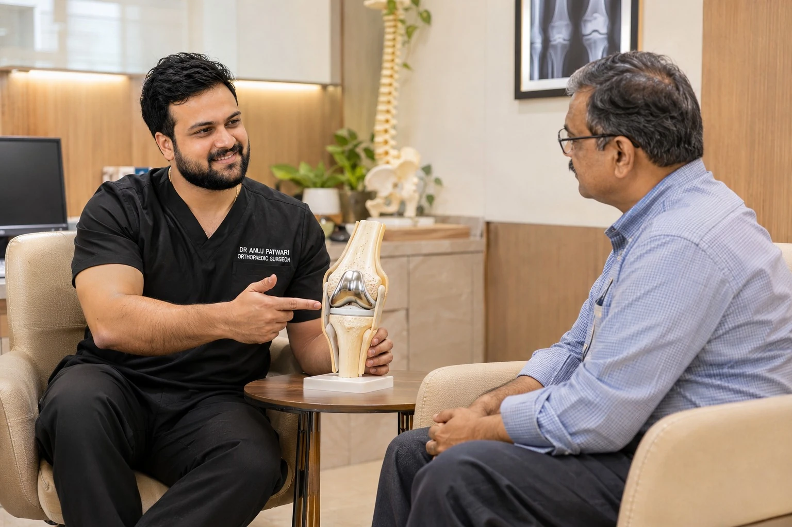
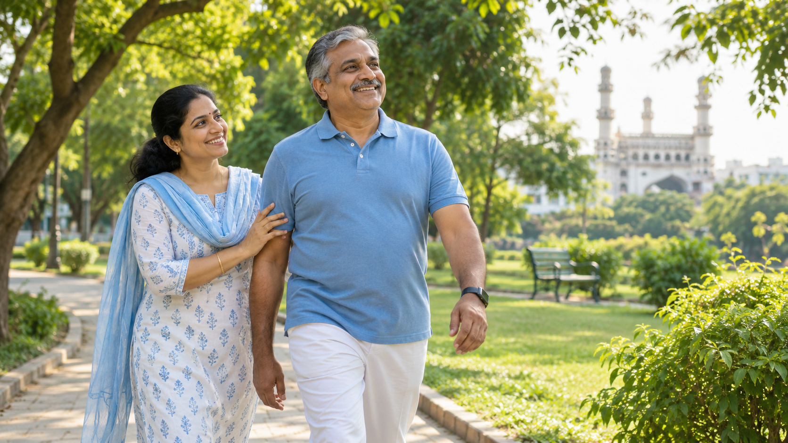

Address
Bone and Beyondd – Joints and Sports Injuries Clinic4-7-386, Esamia Bazar,
Inside the lane just beside Honda Bike Showroom,
Near Chaderghat Bridge,
Hyderabad, Telangana – 500027.

From robotic joint replacement and sports injury care to pain management and regenerative medicine, we provide personalised treatment to help you move more comfortably and confidently.
PERSONALISED ORTHOPAEDIC CARE
Get expert evaluation and a clear treatment plan tailored to your needs.
Follow us on InstagramOrthopaedic Excellence
When pain or an injury holds you back, you deserve care that starts with listening. Talk to us about what you’re experiencing and the activities you want to return to.


ADVANCED JOINT & SPORTS INJURY CARE
At Bone and Beyondd – Joints and Sports Injuries Clinic, we focus on comprehensive orthopaedic care, joint health and sports injury management. Our patient-centred approach combines personalised consultations, accurate diagnosis and advanced treatment options to help you move with confidence.
SERVICES
INSURANCE SUPPORT
For Orthopaedic Treatments & Surgeries
Get access to orthopaedic care with eligible insurance coverage and cashless treatment assistance.
Coverage and cashless availability depend on your policy and treatment. Please contact the clinic to confirm your eligibility.
Care planning
Talk with Dr. Anuj Patwari about how your concern affects your day, what you want to get back to and what the next steps could look like.
Plan a consultation ↗Patient resources
Have any relevant reports or images from earlier visits handy, along with a list of medicines and any questions you want to ask.
Think about when the concern began, which activities are affected and which activities you’d like to return to.
PROCESS
Discuss your symptoms and joint concerns with our specialist.
X-rays, MRI/CT, ultrasound or lab tests, if needed.
A personalised plan with medicines, physiotherapy, injections or surgery, if required.
Guided rehabilitation to support recovery and movement.
CONDITIONS
PATIENT EXPERIENCE
Thoughtful support for the moments that matter to you.

YOUR EXPERIENCE MATTERS
Whether you’re managing joint pain, recovering from an injury or exploring treatment options, we’re here to understand your concerns and help you take the next step with confidence.
FAQ
with Dr. Anuj Patwari
You should consult an orthopaedic specialist if you experience joint pain, swelling, stiffness, sports injuries, fractures, or difficulty with movement. Dr. Anuj Patwari offers consultations in Hyderabad.
No. Many orthopaedic conditions can be treated with medicines, physiotherapy, injections, and other non-surgical treatments. Surgery is recommended only when necessary.
Dr. Anuj Patwari specialises in robotic joint replacement, sports injuries, arthritis management, including rheumatoid arthritis, pain and regenerative medicine, and orthopaedic rheumatology.
Robotic knee replacement is an advanced surgical technique that helps the surgeon plan and perform knee replacement with greater precision.
Recovery time depends on the type of surgery, your overall health, and rehabilitation. Dr. Anuj Patwari will guide you with a personalised recovery plan.
Use the consultation form to send your request on WhatsApp, or call the clinic to schedule your consultation.
If you have any other questions about orthopaedic conditions or treatments, please contact our clinic. Our team will be happy to assist you.
Dr. Anuj Patwari has 7 years of experience in Orthopaedics, with a focus on robotic joint replacement, sports medicine, pain management, and regenerative medicine.
Dr. Anuj Patwari is available for consultations at Bone and Beyondd – Joints and Sports Injuries Clinic in Hyderabad. For appointment availability, timings, and bookings, please contact our clinic directly.
For appointments, consultations, or treatment-related enquiries, get in touch with Bone and Beyondd.
Call the clinic →Blog
Explore practical information about joint health, sports injuries and recovery.
Explore all articles →GET IN TOUCH
Get orthopaedic consultation and personalised treatment guidance for joint problems, sports injuries and musculoskeletal conditions.
4-7-386, Esamia Bazar,
Inside the lane just beside Honda Bike Showroom,
Near Chaderghat Bridge,
Hyderabad, Telangana – 500027.